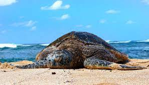

Threats to Turtles
|
After hatching, out of 1000 baby turtles only 1 turtle is able to reach adulthood.with the global warming, the sea water levels rises and results in beaches where they lay eggs getting destroyed. not only this due to increase in sea temperature the currents in sea changes.which then creates new ocean paths that will put turtle lives in danger by enabling predators to reach their habitats. since the turtles have a magnetic map imprinted in their heads where the nesting beaches are located they come back to the same location for nesting. with the sea level rising these beaches get eroded and destroyed leaving turtles with no option for a nesting location. |
 |
|
Ocean Pollution is harmful to turtles in every stage of their life from eggs to a full grown adult turtle. This is due to the fact most of the pollutants that pollutes oceans contain toxic substances withing them that releases to the sea immediatley or over a certaint period, these toxic substances inclube petroleum,plastic,toxic metals,agricultural and industrial waste chemicals,fertilizers and electronic waste, out of these pollutants petroleum waste that are released in marine vezels and untreated waste disposed into the sea from factories damaging the nesting areas of the turtles. next most hamrful waste is the plastic waste. these include fishing nets, fishing threads,polythene bags and straws,etc... after these being released into the sea turtles face many issues regarding only this waste product, turtles get polythene bags confused with jellyfish and eats the waste results blocked digestive tracks and straws stuck in turtles noses which eventually leads to death of the animal. |
|
sea turtles begins there life as a egg hatching in a beach, with the urbanisation and rapid population growth people are moving into the more habitable areas which happened to be near the natural habitats of sea turtles. with more people moving in the developments in beach areas for entertainment purposes increases to fulfill human requirments. with on the other hand these due to these developments turtle habitats got destroyed leaving them with no alternate options.with the habitats getting destroyed turtles have to search for another nesting spot exposing them to significantky more predators which puts their existent at a risk. |